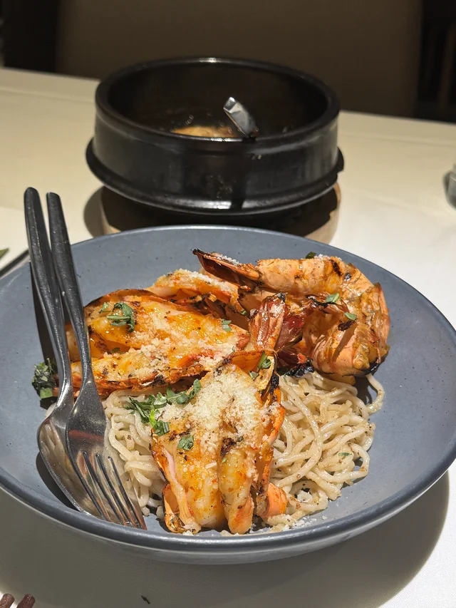
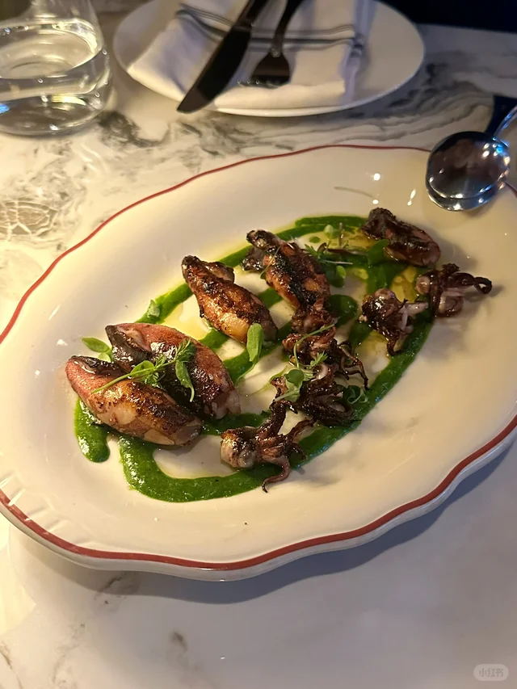
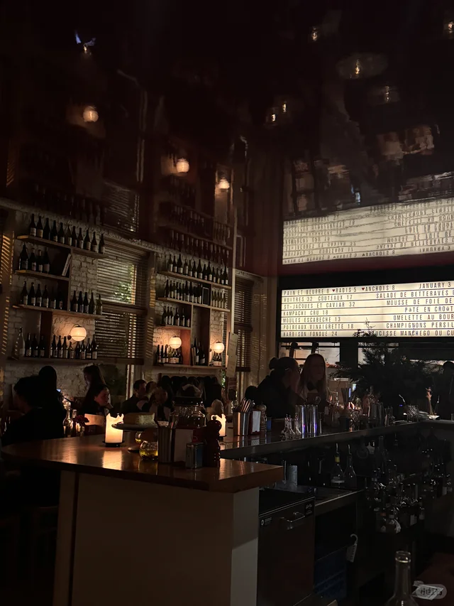
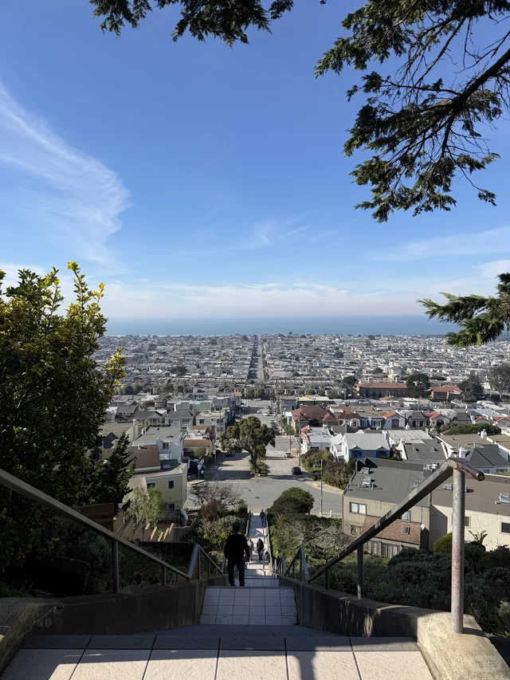
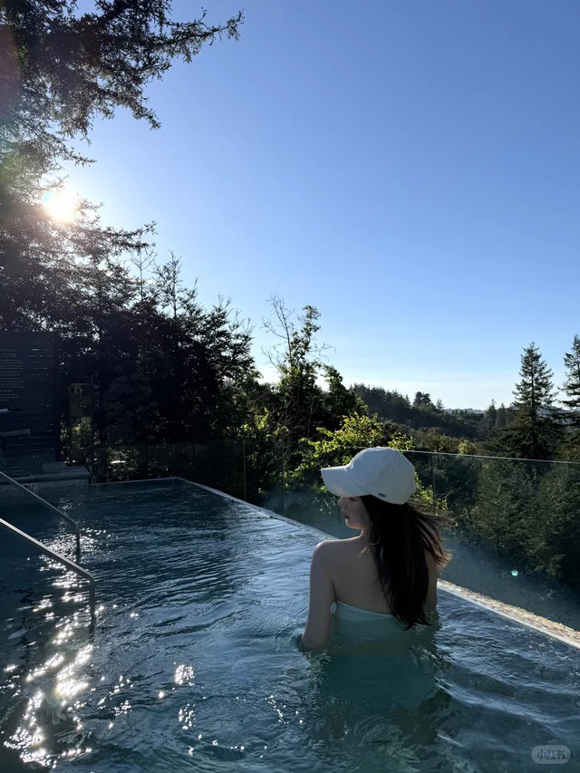
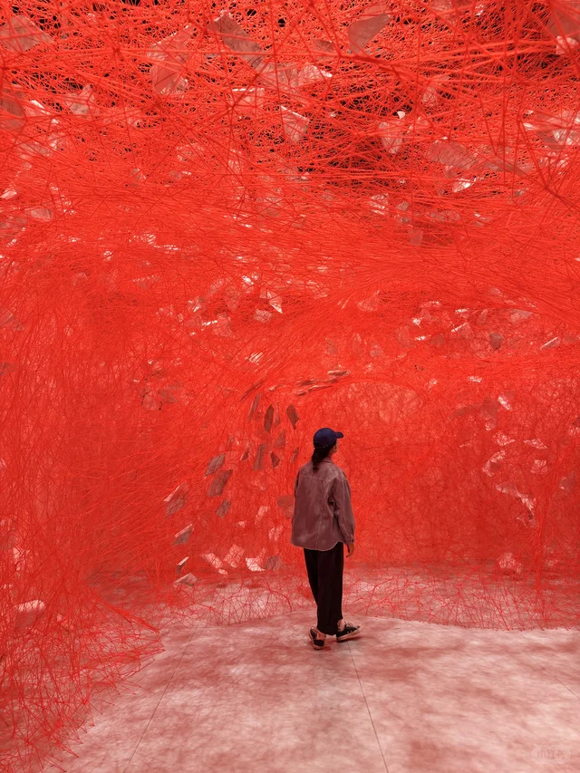
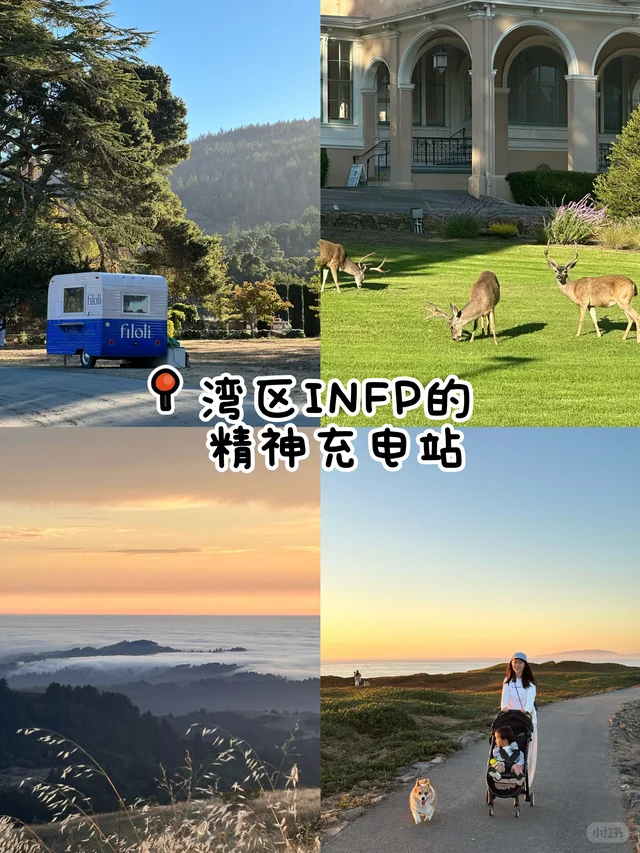

🎉活动与演出

「🍓本周长周末湾区精彩活动5/21-5/25」
正好赶上Memorial Day长周末，一篇get本周所有精彩活动，懒人党的救星。

「湾区5/22-5/25长周末活动| 嘉年华+夜市+市集+博物馆」
嘉年华、夜市、市集一网打尽，适合带家人朋友一起出门撒欢。

「旧金山湾区5月活动✨杀糕节x马拉松x免费新展」
杀糕节加马拉松加免费新展，5月最后一波活动别错过。
「湾区限定｜Mulberry U Pick」
U-Pick季节到了，桑葚和樱桃一起摘，是夏天的仪式感。
🍜美食探店

「湾区秘藏居酒屋x十四代 -经济上行时期的美」
隐藏居酒屋配十四代清酒，氛围感拉满，适合特别的夜晚。

「湾区｜开车一小时也要去吃的贵州烧椒鸡！好吃」
博主说开车一小时也值得，烧椒鸡爱好者必须冲。

「七访｜湾区最适合孕期解馋的米其林三星」
去了七次的米其林三星，孕期也能放心吃，含金量很高。

「旧金山 $98 tasting menu 无敌好吃 😁」
$98的tasting menu在SF性价比惊人，米其林平替预定。

「重生之在Cupertino一周吃什么」
南湾打工人的吃饭烦恼，这篇帮你排好一周菜单。
🌲户外自然

「🌲湾区周末逃离计划 📍Dawn Ranch」
想短暂逃离城市的话，Dawn Ranch是周末小住的好选择。

「旧金山 Land's End 陆地尽头」
陆地尽头看海，是SF最治愈的免费景点之一。

「SF湾区走过最棒的trail！走完爱上了SF！」
博主走完直接爱上SF，徒步爱好者请收藏这条trail。

「湾区周边 ❄️ 冷门Getaway 8个Day Trip打卡地」
8个冷门day trip打卡地，热门景点人挤人时的最佳备选。

「🇺🇸旧金山｜这是我去过最美公园之一」
博主认证的最美公园之一，散步野餐都合适。
🎨艺术与文化

「湾区生活 | SF莫奈画展」
莫奈大展在De Young，喜欢印象派的不能错过。

「SF Asian Art Museum盐田千春展✨」
盐田千春标志性的红线装置，亚洲艺术博物馆值得专程一去。

「湾区看展 | 你见过办在motel里的艺术展吗」
把艺术展办在motel里，Startup Art Fair的脑洞值得围观。

「湾区宝藏免费艺术馆｜斯坦福ca」
斯坦福校园里的免费艺术馆，文艺青年的低成本充电站。

「Beeple新展在湾区Palo Alto开幕🎨」
数字艺术大神Beeple新展落地Palo Alto，科技与艺术的碰撞。
💎宝藏地点

「湾区的hidden gem」
500+点赞的湾区hidden gem，本地人才知道的小角落。

「湾区茶室，适合找个雨后点一壶茶，读一本书」
雨后的茶室时光，是湾区难得的慢生活打开方式。

「湾区半岛INFP的精神充电站」
i人专属充电地图，需要独处和安静的时候来这些地方就对了。

「旧金山｜不太用力，但挺好看的店」
不刻意但很有味道的小店合集，逛街吹风都很惬意。